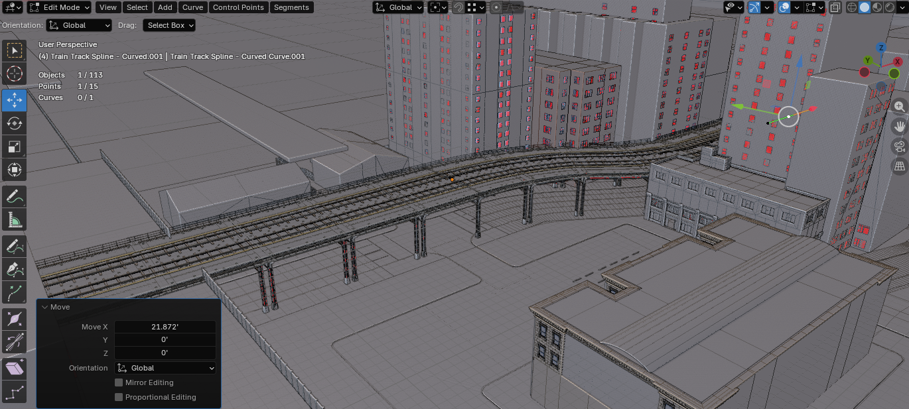
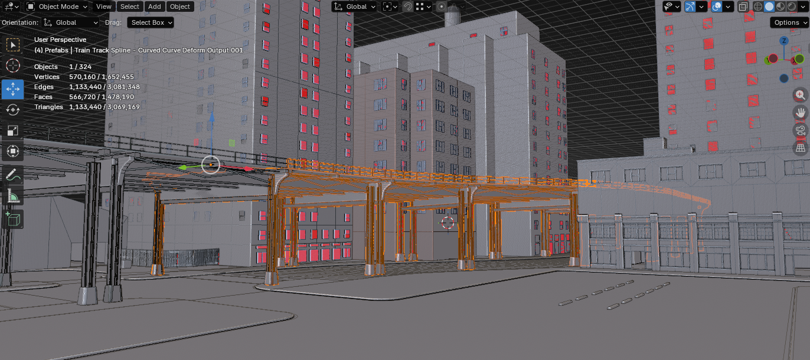
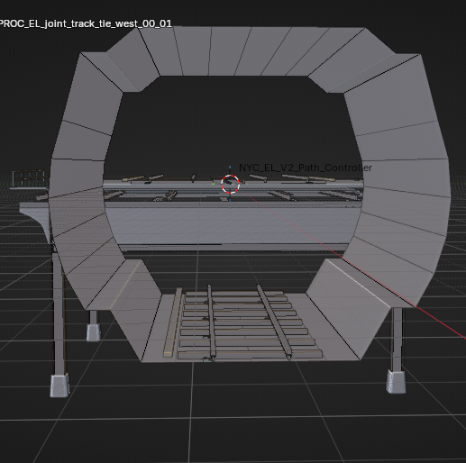

Since the May 29 devlog
The last public AfterDark update was about the end-of-May push: S17 V3 sync, tactical walls becoming a real siege prototype, traffic, residents, police pressure, and the general feeling that the city was finally starting to assemble into something testable instead of just something ambitious.
This update is the next step after that.
The clearest headline is the train side. The first real train-track pass in Blender is now done, and more importantly, the tooling around it held up well enough that it stopped feeling like a fragile one-off. That turned out really nice. It is the kind of result that matters twice: once because the scene itself looks better, and again because the map pipeline is getting more trustworthy.
At the same time, siege walls were optimized and cleaned up, which matters because they had already crossed the line from idea to real gameplay surface in the previous post. The goal now is not only to prove they can work. The goal is to make them readable, performant, and practical enough to keep moving forward without dragging the whole build down.
There is also a lot of other support work in this stretch: fast-travel train infrastructure, train-station cleanup and LOD work, runtime diagnostics, camera and UI polish, prop/runtime management, combat-state support, economy additions, and several smaller MVP-facing systems that make the city easier to test as a whole.
The train tracks are finally in
The nicest part of this stretch is that the train track work stopped being a vague future slice and became an actual first pass in the world.
There is now a proper Blender-authored track pass for the train-station side of S17 V3, with new straight and curved spline-applied track meshes brought into the game and placed into the active scene. That matters visually, but it also matters structurally. Tracks are one of those map elements that can expose whether the Blender-to-s&box loop is really becoming usable or whether it is still held together by manual recovery and luck.
This pass is a good sign.
The track work did not land as a random art drop. It landed as part of the broader Blender Bridge / scene-sync production story that has been carrying more of S17 V3 over the last few devlogs. The workflow is getting more believable:
- build or revise the environment in Blender,
- bring it through the bridge/tooling path,
- place it into the current scene state,
- and keep iterating without turning every update into a cleanup spiral.
That is the bigger win here. The tracks look good, but the more important part is that this kind of map work is becoming repeatable.



That new footage is useful because it shows the train work where it actually matters: in the live scene, with the rest of the district around it. It also makes the unfinished parts obvious in a healthy way. The new train pieces are in, but they still need better materials, some proportion tuning, fixes to the underside read, and cleanup around the nearby support props and lights so the district stops feeling like a raw placement pass and starts feeling authored.
It also shows the NPC system continuing to come online in parallel, which is important because the city cannot just become more geometric. It has to become more inhabited at the same time.
Siege walls moved from experiment to a better forward branch
The previous devlog framed tactical walls as a real siege-style testbed. That is still true, but the work since then has been more practical.
The wall system got a heavier cleanup and optimization pass, and the direction is getting more locked: the older prototype branches still matter as references, but the project is increasingly treating the forward SDF wall path as the real branch to keep pushing.
That is a better place to be.
The early question was "can the wall feel readable enough to be worth doing at all?" The current question is more mature:
- can bullet and C4 damage stay readable,
- can collision stay close enough to the visible breach,
- can rebuild cost stay acceptable,
- and can the wall remain something the game can actually afford to use as a real support/combat surface?
This pass pushed that in the right direction. The walls are not just being made flashier. They are being made more shippable.
That matters because the whole Builder/Fabricator support loop depends on it. Tactical walls only become worth designing around if they can survive contact with real gameplay: repeated hits, sightlines, collision, upgrades, and a city full of other expensive systems running nearby.
The train system is growing past scenery
The train work also moved on the gameplay side, not only the environment side.
There is now a first pass on train fast travel: route-authored stations, receivers, spline routes, train call/boarding timing, and a manager-owned runtime loop that can validate riders, reserve destinations, and drive the station-to-train flow. Public subway use is also already being bounded by wanted-state rules, which is exactly the kind of constraint the system needs if it is going to support the city instead of becoming a free escape hatch.
That is still an early system, but it is pointing in a good direction.
The important thing is that it is not being framed as magic teleport convenience detached from the world. It is being built as part of the map: stations, routes, entry points, restrictions, and scene-authored travel logic that can later become risk, pressure, and movement choice instead of a bland shortcut menu.
So the train side now has two layers moving at once:
- the visible track/world pass in Blender,
- and the first real travel infrastructure underneath it.
That pairing is exactly what S17 V3 needs more of.
Train-station cleanup kept paying off
There was also a quieter but important pass around the train-station district itself: more LOD work, building cleanup, and continuing fixes to the imported building set so the area holds together better at practical play distances.
That included more LOD and building adjustments earlier in June and continued height/scene cleanup work after that. It is not the loudest headline in the update, but it is the kind of maintenance that makes the bigger track and route work worth doing in the first place.
The train-station side of S17 has been one of the places where the Blender-driven world workflow is easiest to judge, because it contains a little bit of everything:
- repeated imported building families,
- route and road context,
- support art that needs LOD discipline,
- scene placement churn,
- and now train-track geometry that has to feel intentional instead of improvised.
This stretch made that part of the city feel more owned.
The code and MVP surface kept getting broader
Outside the train and siege headlines, the repo also shows a steady push toward a more usable MVP surface.
Some of the bigger support pieces in this stretch:
- train fast travel runtime with manager-owned stations, receivers, route logic, boarding/call timing, and route-keyed travel state,
- tactical-wall SDF management and cleanup so the forward destruction branch is easier to budget and less fragile under repeated rebuilds,
- prop runtime/catalog/policy systems so world-spawned and player-driven props are being managed more deliberately instead of as loose scene clutter,
- bullet-casing evidence support that keeps the police/crime layer moving toward something more physical and investigable,
- ammo vendor and ammo resupply systems that make the combat/support layer easier to use in practical play,
- player combat-state and broader player-state tracking so the game has a sturdier way to reason about pressure, status, and interaction gating,
- runtime diagnostics and optimization utilities so heavier city systems are easier to inspect without guessing,
- camera focus improvements for world entities like money printers and similar interactables,
- UI polish across the root panel and other player-facing surfaces,
- window/material proximity and interaction cleanup so authored surfaces and focused-use behaviors are becoming less awkward,
- NPC/runtime safety and resident-side cleanup that keeps the city layer more stable as more authored behavior stacks together,
- train-station building and LOD corrections that support the environment side of the same push,
- and a new bitcoin miner gameplay object folded into the growing economy layer.
That is a wide list, but that is the current reality of AfterDark. The project is not in a neat single-feature sprint. It is in the part of production where the city has to become broadly usable enough that the major features can start reinforcing each other instead of constantly tripping over missing support.
That is also why this post should not be read as "the train week" or "the wall week" only. A large part of the progress here is codebase shape. Systems are being pulled into better runtime owners, clearer manager paths, more explicit policy layers, and more inspectable support tools. That is less glamorous than a new screenshot, but it is exactly the kind of work that decides whether a large city/server project can keep absorbing new features without turning brittle.
What this stretch adds up to
The May 29 post was about the city becoming denser and more connected.
This June update is about some of those threads becoming more real:
- the first train-track pass is actually in,
- the Blender-side tooling around that pass proved itself well enough to feel worth leaning on,
- siege walls got a more serious optimization/forward-direction cleanup,
- train fast travel exists as a first real route system,
- the train-station district kept getting structural cleanup,
- a wider slice of the codebase moved through manager/runtime/policy cleanup instead of staying scattered,
- police/crime support systems such as evidence and combat-state tracking got broader,
- economy/support surfaces picked up new vendor and entity work,
- and player-facing camera/UI handling kept getting refined,
- and the surrounding runtime/UI/gameplay support kept broadening the MVP surface.
That is a solid follow-through update.
It is also a better kind of progress than just "more stuff was added." Train tracks are not only set dressing. They are a proof point for the map pipeline. Siege-wall optimization is not only polish. It is the difference between a cool prototype and a system the rest of the game can actually depend on. Fast travel is not only convenience. It is part of figuring out how the city moves without flattening the city into nothing.
One thing that is also becoming clearer in the recent footage is performance pressure. Engine stutter is still noticeable right now, so a big part of the current focus is simply saving more frames on a 2080 Ti while the map, NPC work, and support systems keep getting denser. That matters as much as any one feature. If the city cannot hold onto smooth frame time while these systems stack together, then every other improvement becomes harder to trust.
What comes next
- Keep expanding the train-track and station side of S17 V3 without losing the cleaner Blender sync loop.
- Finish the current train-piece cleanup pass: materials, proportion adjustments, underside fixes, and surrounding prop/light corrections.
- Continue treating the train-station district as a proving ground for imported-building cleanup, LOD discipline, and route readability.
- Keep tactical walls on the forward optimized path instead of reopening every older branch.
- Keep the train travel system bounded so it supports city structure rather than bypassing it.
- Keep pushing on performance so recent engine stutter comes down and the build holds onto more frames on a 2080 Ti.
- Keep consolidating runtime ownership into the right manager/policy layers instead of letting new systems stay ad hoc.
- Keep pushing practical MVP systems that make the world easier to test, not just easier to screenshot.
This is one of those updates where the nice part is not only that the train tracks are finally there. The nice part is that Nightshift got them there through a workflow that is starting to feel dependable, and that the rest of the city is getting a little more ready to carry that momentum.
Signed, Nightshift